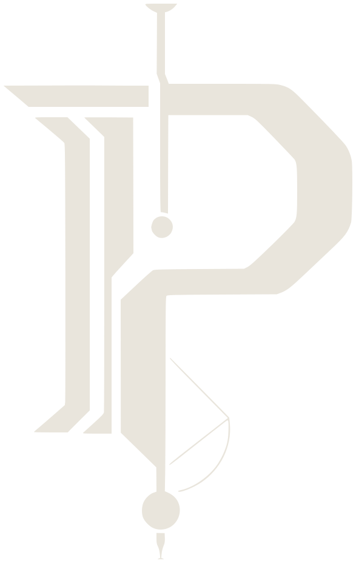

rotocolisBrowser agents have spent years teaching models to drive screens. That’s the wrong loop. Protocolis compiles the site instead, into a verified protocol. Typed actions, verified as they run. Learned verification adapts as evidence changes. A model-blind credential broker keeps secrets out of the agent’s context. No screenshot loop. No site-specific setup. No model inference in the compilation. Screenshot agents are the spinning disk; this is the solid state.
Solid-state browsing for AI agents
Every other agent makes you shift gears yourself. Browser Use ships its own agent, a flash mode, a tools mode and a hosted Ultrafast; the faster the mode, the fewer tasks it finishes. So you pick a full mode for hard tasks and a fast one for easy ones, and pay for the wrong choice either way. Protocolis Adaptive is one mode that shifts on its own: step by step, the engine’s evidence decides whether a small choice model is enough or the agent’s model is needed. No fast mode, no full mode, and no trade. Measured against Browser Use, Browserbase’s Stagehand, Microsoft’s Playwright MCP and Jev Ultrafast on the same model and tasks.
Replayed from the saved runs, shown at 2× speed; the clocks show real seconds. The panes call Adaptive by its internal name, Auto. Every answer checked against the final page and a key written before the run.
Replayed from the saved runs, shown at 2× speed; the clocks show real seconds. Every answer checked against the final page and a key written before the run.
Replayed from the saved runs, shown at 2× speed; the clocks show real seconds. Every answer checked against the final page and a key written before the run.
Adaptive’s choice model made 2 picker calls here, counted in its cost. Replayed from the saved runs of one four-arm race, shown at 2× speed; the clocks show real seconds. The Adaptive pane carries its internal name, Auto. Every answer was checked against the final page and a key written before the run. Selected runs.
Adaptive’s choice model made 3 picker calls here, counted in its cost. Replayed from the saved runs of one four-arm race, shown at 2× speed; the clocks show real seconds. The Adaptive pane carries its internal name, Auto. Every answer was checked against the final page and a key written before the run. Selected runs.
Adaptive’s choice model made 3 picker calls here, counted in its cost. Replayed from the saved runs of one four-arm race, shown at 2× speed; the clocks show real seconds. The Adaptive pane carries its internal name, Auto. Every answer was checked against the final page and a key written before the run. Selected runs.
About 1/118 of the cost. Shown at 8× speed.
Browser Use answered from Wiktionary instead of Cambridge.
About 1/22 of the cost.
About 1/235 of the cost.
About 1/149 of the cost.
About 1/171 of the cost.
About 1/129 of the cost.
About 1/210 of the cost.
Browser Use faster here; Protocolis at about 1/117 of the cost.
Same answer.
Browser Use’s own eval setup.
Same answer, 7.5095 × 10^33.
Browser Use reached the same answer but ended without a final page, so the judge failed it. Shown at 8× speed.
Shown at 8× speed.
Shown at 8× speed.
Browser Use faster here.
Shown at 3.5× speed.
Take 1 of the 2 usable Apache takes, out of 4 recorded. The other two had a blank screen capture and a wrong call count on the board. One task, not a benchmark result. BU Ultrafast ran as Browser Use sells it, on their cloud browser and model through their API; Protocolis Adaptive ran on one Mac. Both started on the same second, each clock runs from GO to that agent’s finish, and the board names each model. Across all 8 takes of these two tasks, Adaptive finished first every time and BU Ultrafast answered correctly every time. Shown in real time.
Take 2 of the 2 usable Gutenberg takes, out of 4 recorded. The other two showed BU Ultrafast as failed on the board when it had answered correctly. One task, not a benchmark result. BU Ultrafast ran as Browser Use sells it, on their cloud browser and model through their API; Protocolis Adaptive ran on one Mac. Both started on the same second, each clock runs from GO to that agent’s finish, and the board names each model. Across all 8 takes of these two tasks, Adaptive finished first every time and BU Ultrafast answered correctly every time. Shown in real time.
BU Ultrafast called through Browser Use’s public API, as their page shows. Over six runs it once answered “Virginia Tech, 1872” and once skipped the links for a web search; Protocolis followed the links to 1802 every time. Shown in real time.
Shown in real time.
Two page hops, then a read. Jev stayed on Collins’s page and stopped at its own 120-call budget; a second take went the same way (Protocolis 6.2 s). Shown in real time.
Browser Use tools mode faster here.
Same answer.
Same answer.
Same coding agent, model and prompt; fresh browsers on one Mac. Answers checked against site data or Browser Use’s judge.
Matched model, task and prompt; fresh browsers on one Mac. Answers checked against a prewritten key or Browser Use’s judge.
Matched model, task and prompt; fresh browsers on one Mac. Answers checked against prewritten keys.
Grok 4.6 in every arm, on the same task and cloud worker. Answers checked against the final page and prewritten keys.
A smaller Protocolis model against a frontier Browser Use model, with the same task and budget. Answers checked against prewritten keys or Browser Use’s judge.
Answers checked against prewritten keys.
Passwords stay in the broker and never reach the agent’s model.
Standard vs Browser Use’s own agent · GLM-5.3-flash · 98 held-out tasks
Ultrafast: Adaptive vs Jev Ultrafast · 40 runs · 40% less time per completed task (10.0 s vs 16.6 s)
Sixteen capabilities, compared product by product.
| Capability | Protocolis | Browser UseOwn agent | Browser UseOpenAI tools | Browser HarnessBrowser Use | Stagehandv4 docs | Playwright MCPMicrosoft | UnbrowseHosted service | Browser Controlkeon |
|---|---|---|---|---|---|---|---|---|
| ★Just-in-time cold compiler engine | ✓ | — | — | — | — | — | — | — |
| ★Automatic transmission: one mode that shifts step by step | ✓ | — | — | — | Partial | — | Partial | — |
| ★Self-healing: verification that learns from outcomes | ✓ | Partial | — | — | Partial | — | Partial | — |
| ★Application operations compiled on first contact | ✓ | — | — | — | — | — | — | — |
| ★Compilation without model calls | ✓ | — | — | — | — | — | — | — |
| ★Action effects verified on first contact | ✓ | Partial | Partial | Partial | Partial | Partial | — | Partial |
| ★Task completion verified on first contact | ✓ | Partial | Partial | Partial | Partial | Partial | — | Partial |
| ★Compiled knowledge reused across visits | ✓ | — | — | — | Partial | — | ✓ | — |
| ★Verified replay with protected-action stops | ✓ | Partial | — | — | Partial | — | Partial | — |
| Screenshot-free execution and result checks | ✓ | Partial | Partial | ✓ | ✓ | ✓ | — | ✓ |
| Built-in bot-protection handling | ✓ | Partial | Partial | Partial | Partial | — | ✓ | Partial |
| Challenge handling and isolated escalation | ✓ | Partial | Partial | Partial | Partial | — | Partial | Partial |
| Challenge lessons shared across sites | ✓ | — | — | — | — | — | — | — |
| Model-blind credential broker | ||||||||
| ★Credentials bound to verified fields | ✓ | Partial | — | — | Partial | Partial | Partial | — |
| ★New API keys captured model-blind | ✓ | — | — | — | — | — | — | — |
| Passkeys | ✓ | — | — | — | — | — | — | — |
| Full matchesOut of 16 listed capabilities | 16 / 16 | 0 / 168 partial | 0 / 165 partial | 1 / 164 partial | 1 / 169 partial | 1 / 163 partial | 2 / 165 partial | 1 / 164 partial |
✓ Matches the defined capabilityPartial: related support with limits— Not established in reviewed sourcesPatent pending
Documentation review · 5 November 2026 · Ratings use the definitions and scope below; they are not new benchmark results.
Each alternative was reviewed individually against the same definitions. “Partial” includes narrower mechanisms and separately supplied cloud services. A dash means the reviewed sources do not establish the defined capability, not that support is impossible. Related technology does not earn partial credit when it fails an explicit cold or first-contact requirement. Protocolis ratings describe our engine’s supported capabilities; competitor ratings describe their published documentation and source, not independent runtime testing. Current documentation may differ from the versions used in the demonstrations and benchmarks.
A star marks a capability described in Protocolis’s pending US provisional patent applications. Pending applications are not issued patents.
Open-source Agent, with optional Browser Use Cloud. Current source review; the benchmarks below retain their separately named versions.
Agent source · Cloud capabilities
Other dashed rows: not established in the sources linked above.
The documented OpenAI browser-tool integration with Browser Use as browser driver; this is a separate tool loop from Browser Use Agent.
OpenAI integration · Cloud capabilities
Other dashed rows: not established in the sources linked above.
Browser Use’s browser-harness CDP tool and skill. Reviewed independently of Browser Use Agent and the OpenAI integration.
README · Page workflow · Optional cloud service
Other dashed rows: not established in the sources linked above.
Current v4 documentation, including optional Browserbase services. The Stagehand demonstration uses its explicitly named older version; these are not new benchmark results.
Actions and variables · Observe · Extract · Caching · Browserbase CAPTCHA handling · Text-based result-check example · v4 extract screenshot default
Other dashed rows: not established in the sources linked above.
Microsoft’s Playwright MCP server, including its optional verification tools. Generic CDP connectivity is not treated as a built-in bot solver.
Other dashed rows: not established in the sources linked above.
Published contract for the hosted, closed-source service. The public repository is its client and documentation. The vendor marks some acceptance checks open; this review does not independently validate the service.
How it works · Current shipped scope · Vault and status
Other dashed rows: not established in the sources linked above.
keon/browser-control, the Rust CDP CLI. This is a distinct project inspired by Browser Harness, not a renamed Browser Use agent.
README · Final-answer checks · Optional Browser Use Cloud
Other dashed rows: not established in the sources linked above.
Protocolis Adaptive and Protocolis Standard against Browser Use, Stagehand, Playwright MCP and Browser Harness: the same model, the same tasks and the same budget on both sides, on live websites.
20 public tasks, each run twice · 40 complete task-rounds with all three arms in one window · Protocolis Standard given the same first look · page check against a gold answer · every attempt counted · current build, 5 November 2026. Adaptive finished first in 39 of 40 races, Standard in 35. Browser Use reports no cache split, so its input is priced uncached; priced as if all of it were cached, it would be $0.0357, still 2.9× Adaptive’s cost.
16 development tasks on live websites · Browser Use 0.13.13 · Protocolis Standard. Against the same mode on a small model (GLM-5.3-flash, 39 development tasks): 25 of 39 completed against 22, at 62% lower cost.
20 public tasks, each run twice · 40 runs per arm · one session, arms rotating per task · same final-page check for every arm, every attempt counted. Choice-model calls per completed task: Protocolis 2.9, Jev 8.7. Jev’s own time swings between runs of the same tasks; Protocolis’s did not. Jev Ultrafast runs only a small model, so it is matched against Adaptive. On the same 40 tasks, in a separate read, Protocolis Standard completed all 40.
31 complete task-rounds of set C with all four arms in one window · Protocolis Standard given the same first look as the rivals · page check against a gold answer · every attempt counted · current build, 5 November 2026. Adaptive finished first on 27 of 31 tasks, Standard on 25.
31 complete task-rounds of set C with all four arms in one window · Protocolis Standard given the same first look as the rivals · page check against a gold answer · every attempt counted · current build, 5 November 2026. Adaptive finished first on 20 of 31 tasks.
40 long open-web tasks · arms rotated per task in one session · judged blind by WebJudge from the screenshots, second judge on disputed tasks · every attempt counted. Model calls per completed task: Adaptive 23, Standard 22, Stagehand 67.
Each row names the round it comes from. Every arm is being re-measured on the current build; cells marked measuring are running now. Cells marked measuring are still running. Updated 5 November 2026.
Same model, same tasks, same budget. Every arm runs the same model on the same tasks, on live websites, arms rotating per task in one session. Protocolis Adaptive adds its small choice model, and its cost is counted.
Task sets. Short tasks: 20 public tasks, run in repeated rounds; each row gives its own run count. Long tasks: 40 long open-web tasks. Model sizes: 39 development tasks on live websites and component demos.
Completion. Short tasks are judged by checks on the finished page. Long tasks are judged blind by WebJudge from the screenshots, with a second judge on disputed tasks. Every attempt counts.
Time and cost. Time is a stopwatch from the task's arrival to the answer. Cost is the metered tokens at the provider's list prices, choice model included. Both are per completed task.
Versions. Browser Use 0.13.13 · Stagehand 3.7.3 · Playwright MCP 0.0.84 · Browser Harness 0.1.13. Protocolis on its current build, November 2026.
Full results, build hashes and the reproduction kit are available under NDA.
Protocolis is the work of a sole inventor. It is operational, patent pending and in use by its first paying customers, two trucking dispatch offices. The engine, the credential broker, the patent filings, the measurement record and the reproduction kit are offered together, with a transition period and, if the acquirer wants one, a continuing role.
Vahagn Boudakian, inventor.
A recorded demonstration and a live screen share.
Under NDA, your engineers run their own agents and tasks on a hosted instance: the evaluation platform.
At letter of intent, a time-limited build for inspection.